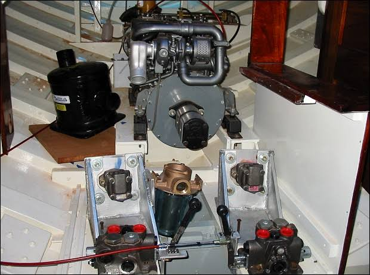
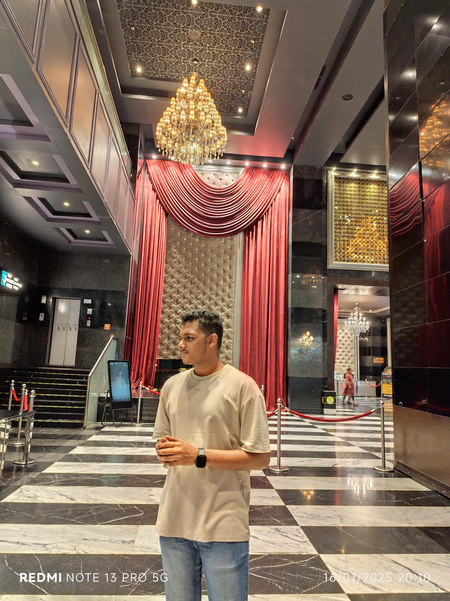

Vaishnav R
B.Tech Final Year Student | AI/ML & Robotics Specialist
Engineering intelligent automated frameworks, real-time computer vision nodes, and optimized core systems software within Linux testing grounds.
Core Technical Implementations
Automated Hydraulic System Sail Boat
Developed a specialized mechatronic hull control rig leveraging miniature fluid valve distributions for closed-loop maritime navigation adjustments. Optimized manual dynamic responses across localized rig layouts to sustain balance shifts over changing surface resistance baselines.

Autonomous War-Field Spying Robot with Night Vision
Architected an agile surveillance rover integrated with specialized imaging instrumentation for low-light scouting operations. Created distinct ROS computational nodes deployed directly within Linux runtimes to manage clean inter-process message handling, video stream sequencing, and motor tracking telemetry without platform lag.

Deterministic Multi-Process Linux Controller
Designed a low-level systems execution profile utilizing primitive OS calls including
fork() and wait() routines. Optimized execution pipelines to guarantee deterministic, isolated runtime behaviors across cascading child processing tracks, eliminating zombie state allocations and context tracking issues.
Technical Toolbelt
Artificial Intelligence
- Python Engineering
- Predictive Modelling
- Computer Vision Architectures
- Data Evaluation Layers
Systems & Hardware
- Robot Operating System (ROS)
- C & C++ Programming
- Hydraulic Control Valves
- Fluid Loop Architecture
- Linux Env Optimization
Foundations
- Data Structures & Algos
- Kernel Process Logic
- Git Version Workflows
- UI Prototyping (Canva)